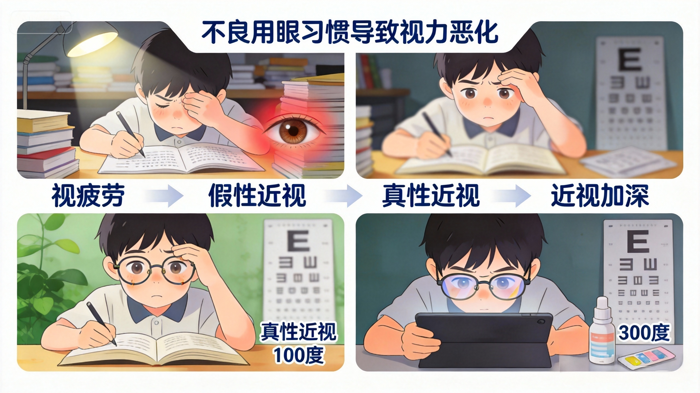

保护视力，从了解开始
近视主要由遗传因素、环境因素和用眼习惯共同作用形成。研究表明，遗传因素约占近视成因的50%，如果父母双方都近视，孩子近视的风险会显著增加。
环境因素包括近距离用眼时间过长、户外活动不足、照明条件不佳等。现代生活中，长时间使用电子产品、读书写字姿势不正确等不良用眼习惯也加剧了近视的发生和发展。
了解近视的成因是有效防控的第一步，只有明确原因，才能采取针对性的预防措施。
近视绝不只是"看不清"这么简单，它是一系列眼部功能改变与结构变化的综合表现。作为门店验光师，掌握近视的临床表现，才能在接待顾客时第一时间捕捉到近视信号，尤其是那些容易被家长忽视的眼位异常问题。
看远模糊、看近清晰，是近视最典型的症状。孩子常抱怨"黑板看不清""电视要坐很近才看得清"。
眯眼可形成"针孔效应"短暂提高清晰度，歪头可改变成像位置，都是近视儿童最常见的小动作。
视物模糊伴随视疲劳，孩子会下意识揉眼、频繁眨眼来缓解眼部不适，有时被误认为"坏习惯"。
眼睛酸胀、干涩、畏光，甚至头痛，尤其在长时间近距离用眼、看远看近频繁切换之后明显加重。
近视度数超过600度即为高度近视，除上述症状外，还可能出现以下结构性和功能性改变：
在近视的诸多临床表现中，外斜视与外隐斜是门店最需要重点关注的眼位问题。临床数据显示，近视人群中斜视发生率明显高于正视人群，而其中又以外斜视最为常见——近视程度越深、发病年龄越早，外斜的发生风险就越大。
双眼有向外偏斜的"倾向"，但平时被大脑融合功能控制住，外观完全正常。只有在疲劳、注意力不集中或检查时才会暴露。
疲劳、走神、看远或阳光下时，一只眼明显向外偏斜，专注或用力看时又能恢复正位。是外隐斜失代偿的表现，最常见于儿童。
一只眼持续向外偏斜、无法自行恢复正位。双眼视功能已被破坏，常伴有单眼抑制和弱视，需要积极干预。
简单来说：调节和集合是一对"联动齿轮"。近视眼（尤其未矫正或矫正不足时）看近几乎不用调节，带动双眼集合的力量也随之减弱；长期如此，双眼向外偏斜的趋势就越来越大。度数越高、长期不戴镜矫正的孩子，出现外斜的风险越大。
科学护眼可有效延缓度数加深。通过合理的用眼习惯、充足的户外活动以及适当的医学干预，可以显著减缓近视发展速度。

预防胜于治疗，养成良好的用眼习惯是避免视力恶化的关键。